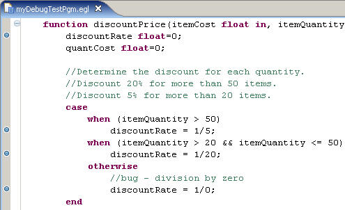

This topic offers guidance on the basic steps
of debugging a program in the EGL debugger.
Before you can perform this task you must have the following
prerequisites:
- An EGL project
- An EGL program or other logic part that needs debugging
The following example provides a program with a simple error
that you can use to test the debugger:
program myDebugTestPgm type BasicProgram
function main()
//Provide some initial values for the array of items.
customerItems items[3];
customerItems[1].itemNumber=1;
customerItems[2].itemNumber=2;
customerItems[3].itemNumber=3;
customerItems[1].itemCost=12.50;
customerItems[2].itemCost=200;
customerItems[3].itemCost=49.95;
customerItems[1].itemQuantity=30;
customerItems[2].itemQuantity=10;
customerItems[3].itemQuantity=60;
counter int;
orderTotal float=0;
//Calculate the total cost of the items.
//Use the discountPrice function to get the discounted cost of each item.
for (counter from 1 to customerItems.getSize() by 1)
orderTotal += discountPrice(customerItems[counter].itemCost,
customerItems[counter].itemQuantity);
end // for loop
//Write the output to the console.
SysLib.writeStderr("The total cost for the order is $" + orderTotal);
end // main
//Return a total price for a group of items
//based on the item price and a quantity discount.
function discountPrice(itemCost float in, itemQuantity int in) returns(float)
discountRate float=0;
quantCost float=0;
//Determine the discount for each quantity.
//Discount 20% for more than 50 items.
//Discount 5% for more than 20 items.
case
when (itemQuantity > 50)
discountRate = 1/5;
when (itemQuantity > 20 && itemQuantity <= 50)
discountRate = 1/20;
otherwise
//bug - division by zero
discountRate = 1/0;
end
//Multiply the cost of the item, the number of items,
//and the discounted price.
quantCost = itemCost*itemQuantity*(1-discountRate);
quantCost = MathLib.round(quantCost, -2);
return (quantCost);
end // function discountPrice
end // program
record items type BasicRecord
itemNumber int;
itemCost float;
itemQuantity int;
end
If you generate this program and run it, EGL will return
an error pointing to the
discountPrice function and
the expression
1/0. In this case, the error is easy
to see, but in other cases you might not be able to find the error
so easily. Your first step in identifying the source of the error
might be to run the program in the debugger with breakpoints to find
where the program fails.
Strategies for debugging an application are beyond the
scope of this documentation, but in general the heart of the debugging
process is identifying the source of a problem in the code. For example,
if your program ends abnormally, you can use the debugger to step
through the code and find the point at which the program fails. If
the program gives unexpected output, you can use the debugger to track
the values of variables and find the point at which the output deviates
from the expected.
The debugger always starts debugging from
a program part. If you want to debug another logic part, such as a
library, you must step into the other logic part from a program. In
some cases you might benefit from writing a simple program with no
other function than to call the logic part that you want to debug.
To
step through an application in the EGL debugger, do as follows:
- Add one or more breakpoints.
You can mark
one or more lines of code as breakpoints. When the debugger
encounters a breakpoint, it pauses before running the associated line
of code. You then have the option of checking the current values of
program variables before telling the debugger how to proceed. Breakpoints
do not affect the generated source in any way; they are meaningful
only during the debugging process.
To add a breakpoint, double-click
the gray margin to the left of the code in the EGL editor. In the
previous example, you might want to add breakpoints throughout the discountPrice function
because the error tells you that this function is where the error
occurred. Breakpoints are marked with blue circles in this gray area:

You
can add a breakpoint at most lines of EGL code that conduct logic,
including the following examples:
However, you cannot add breakpoints at the following lines
of code:
- A variable declaration that does not include an assignment.
- An end statement.
- A line of code that begins with function,
or that begins with program, package,
or any other line that declares a logic part. However, you can set
a preference to have the debugger treat the first line of each program
as though it contained a breakpoint.
- Any line within a data part.
- A blank line or a line that consists only of a comment.
For more instructions on using breakpoints, see Using breakpoints in the EGL debugger.
You can debug a program without
using breakpoints. If you check the preference ,
it has the same effect as setting a breakpoint at the first executable
line inside the main() function of the program. From
this point you can step through or around succeeding lines of code,
that is, execute a single line and pause. For more on the step commands,
see Preparing to run code in the EGL debugger.
- Run a program in the EGL debugger.
After
you have added breakpoints to your program, or set the Stop at first
line option (see "Add one or more breakpoints" earlier in this
topic), you can run it in the debugger.
The
debugger requires a launch configuration to describe how it will run
the application. There are two ways to create a launch configuration:
For most programs, you can use the automatically created launch
configuration.
- In the Project Explorer view, right-click the EGL source program
that you want to debug and then click . The
debugger performs the following tasks:
- If no launch configuration exists for the program, the debugger
creates a default launch configuration. You can view this configuration
by clicking .
- Depending on your workbench preferences, the debugger might switch
to the Debug perspective automatically or prompt you to do so. You
can switch perspectives manually by clicking .
- The debugger begins running the program.
- After the debugger has started running the program, it continues
until it encounters a breakpoint, or, if you have set the preference
for it, finds the first line of executable code. At this point, the
debugger pauses and displays the following information:
- The EGL editor highlights the line about to be executed.
- The Variables view shows the value of all the variables in the
current logic part, including the value of system variables. You can
use this view to track the value of a variable through the program.
You can also change the value of a variable while the debugger is
paused at a breakpoint.
- The Debug view lists the threads running within the current run
unit. In simple terms, this view shows which program or logic part
is currently running. Use this view to resume or stop the debugging
process.
- The Breakpoints view lists the breakpoints in the program. From
this view, you can disable a breakpoint temporarily by clearing its
check box.
- When you want the debugger to continue, click the Resume button
at the top of the Debug view. The debugger continues to the next breakpoint.
You can also use one of the Step buttons to see the program execute
the next line and pause again.
In the example program, you can run
the program from breakpoint to breakpoint until the debugger reaches
the line discountRate = 1/0;, at which point the
debugger returns the same error that you see in the console when running
the program.
- When you are finished debugging, click the Terminate button
at the top of the Debug view to stop the debugger or click the Resume button
to allow the program to finish running.